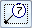
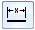
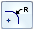
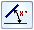
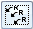
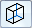

Retrieve Dimensions command bar
- Format group
-
- Dimension Style Mapping
-
Specifies that the setting on the Dimension Style page of the Solid Edge Options dialog box determines the dimension style. When you set this option, the style map will apply to the dimensions and annotations created.
- Dimension Style
-
Lists and applies the available dimension styles. This control is unavailable when the Dimension Style Mapping button is selected.
- Properties group
-
The types you select are added or removed based on the current setting in the Add/Remove group.
Example:By default, all options are selected for retrieval. However, if you do not want to retrieve balloons or callouts, then clear the Annotations button

before you select the drawing view.
Linear-
Specifies that linear dimensions are added to (or removed from) the drawing view.

Radial-
Specifies that radial dimensions are added to (or removed from) the drawing view.

Angular-
Specifies that angular dimensions are added to (or removed from) the drawing view.
- Annotations
-
Specifies that annotations are added to (or removed from) the drawing view.

Retrieve Duplicate Radial Dimensions-
Specifies that all radial dimensions with the same dimensional value are retrieved. When this option is cleared, if more than one radial dimension has the same value, only one dimension will be retrieved.

Hidden Line Dimensions-
Specifies that dimensions connected to hidden lines are retrieved.
- Add/Remove group
-
 Add Dimensions
Add Dimensions-
Adds dimensions and annotations to the drawing view. When this option is set, the dimension and annotation types you specify on the command bar are retrieved from the model document and placed on the drawing view you select.
 Remove Dimensions
Remove Dimensions -
Removes dimensions and annotations from the drawing view. When this option is set, you can select a drawing view to delete any dimensions and annotations that were created with the Retrieve Dimensions command.
This option does not remove dimensions and annotations that were not created with the Retrieve Dimensions command.
Example:If you retrieved too many dimensions into a drawing view, then you can change to Remove Dimensions mode
and remove the types you do not want to keep. To learn how to do this, see Remove retrieved dimensions from a drawing view.  Multiple Views
Multiple Views-
Retrieves linear dimensions into all selected drawing views where the dimensions are fully visible and the model dimension plane or sketch plane is parallel to the drawing views.
Multiple Views
On

Off